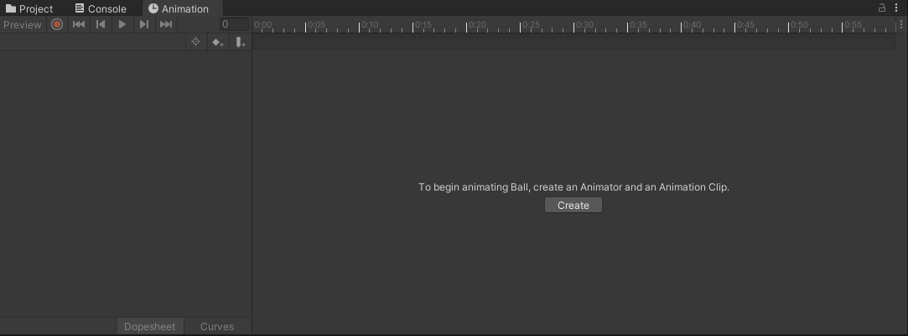
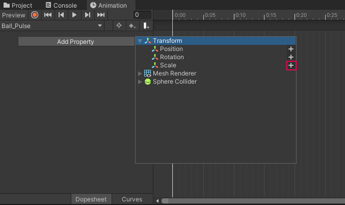
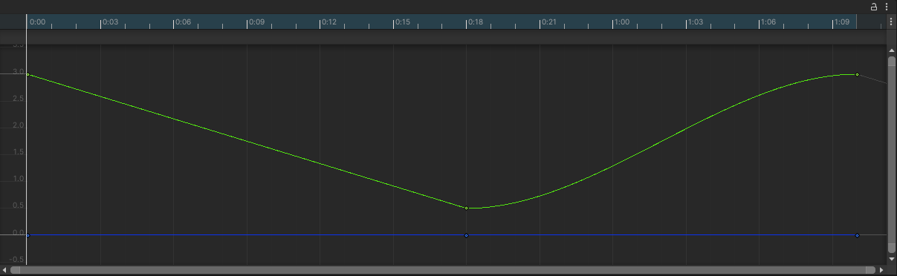
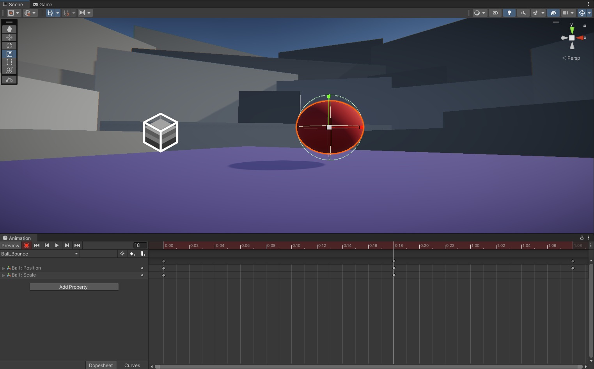
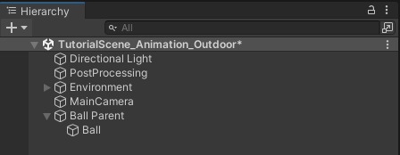

Build the motion inside the clip
How was this made?
- Why does the ball seem to hang near the top but hit the platform quickly?
- Could the same start and end positions produce a very different feeling of weight?
- How could we move the whole bounce to another part of the platform?
In Lecture 9: Unity Sound and Effects, you selected existing character animations through an Animator. Here you create the motion those clips contain. After Lecture 13: Creative Core: Lighting, keep the supplied scene’s appearance fixed and concentrate on how an object moves through time.
New conceptAnimation Clips and keyframes
An Animation Clip stores changes to chosen properties over time. A keyframe records a property value at a chosen moment: a ball can be high, touch the platform, then return high. Unity fills in the values between those moments. You author the important poses instead of writing a movement script.
New conceptTiming and interpolation
Timing determines when the poses happen. Interpolation determines the values between them. Two balls can touch the platform at the same moment yet feel different: one drifts evenly downward, while another gathers speed. An animation curve lets you shape that difference.
New conceptSquash and stretch
A brief change of shape can suggest a soft material. The ball flattens at contact and lengthens just after it leaves the platform. Keeping this deformation close to impact prevents the ball from looking as though it is slowly melting during its whole fall.
New conceptLocal motion and placement
A parent GameObject can place an animated child in the scene. Think of a bouncing display on a movable stand: the bounce remains the same relative to the stand, while the stand changes its location. We will reproduce the common snap-back problem, then separate these responsibilities.
Prior-knowledge recap
In Lecture 5: Unity 2D Essentials, you made a clip from sprite-sheet frames. Here you author numeric Transform values and the interpolation between them. A Transform describes position, rotation and scale. The Animator component uses a Controller to select clips; it is different from the Animation window used to edit their contents. Unlike Unity 3D Essentials, this bounce is authored motion. No Rigidbody or gravity simulation is needed.
Learning outcomes
By the end of this lecture, you will be able to:
- Create and preview a looping clip with explicit keyframes.
- Explain sample time, interpolation and the visible effect of curve tangents.
- Coordinate position and scale so deformation happens at contact.
- Diagnose animated Transform overrides and relocate a clip through a parent.
- Use the Animator’s default state to play your clip, then adapt the motion for a new intention.
- Create a new pulse from your own key choices and diagnose an unfamiliar scale curve.
Skip to practice → · Use Slide mode for the theory sequence before opening Unity.
Prepare the project before class. Allow about 70–75 minutes for the practical, independent exercises and ten quizzes, with 10–15 minutes of theory beforehand and about 10 minutes afterward for recording and export. These are planning estimates, not measured completion times.
Teaching plan
Start with the preview and predictions. Practical estimate: pulse 10 min, bounce 10 min, curves 12 min, deformation 12 min, placement/runtime 8 min, adaptation 8 min, independent pulse and diagnosis 10–15 min. Downloads/import are pre-class. Defer door scripting, humanoid retargeting and the full unit challenge; they are not additional homework.
Prepare the official project
Use a fresh extracted project. Finish downloading and importing before class. All editing below is outside Play mode unless explicitly stated. The official archive records Unity 6000.3.0b9; open a fresh copy with your installed Unity 6.3 Editor and allow any upgrade to finish.
Open a clean animation study with the supplied Ball.
- Download CreativeCore_Animation_U6.3.zip (about 99 MB) and extract it. In Unity Hub choose Add → Add project from disk and select the folder containing Assets, Packages and ProjectSettings. This is a full project, not an asset package to import into the Lighting project.
- Open Assets → CreativeCore_Animation → Scenes → TutorialScene_Animation_Outdoor. Create Assets/Lecture14 in the Project window. Use File → Save As to save the scene there as AnimationStudy.unity; keep the official scene unchanged.
- Select Ball in the Hierarchy and press F in Scene view. Confirm its Transform has Position (-3.87, 2.747, 2.21) and Scale (1, 1, 1). The supplied sphere has radius 0.5 and rests on a platform whose top is at world Y = 2.25. Set Position Y to 2.75 for exact contact. Leave its X/Z and the environment unchanged.
- Open Window → Animation → Animation and dock it next to Project. Also open Window → Animation → Animator. Leave Play mode off. Confirm the Animation window shows Create when Ball is selected; it initially has no Animator. Resolve Console errors before proceeding.
Explanation
Opening the complete project preserves its render pipeline and materials. A scene copy protects the starting layout; the clips created later are separate assets, so saving the scene alone is not a backup of their earlier versions.
The sphere’s center is halfway up its height. With radius 0.5 and scale 1, a platform at Y = 2.25 requires center Y = 2.75. A center at 2.25 would bury half the sphere. The supplied Sphere Collider is not what drives this exercise: clip data will set the Transform.
Refresher (1)Animation versus Animator
Animation edits values within a clip. Animator selects the clip that runs on a GameObject. Keep these windows distinct.
Author a pulse from three poses
Create a short scale-only clip first. Watch the difference between changing a scene value and recording a value into a clip.
Make a one-second pulse that returns to its starting scale.
- With Ball selected, click Create in the Animation window. Save Ball_Pulse.anim under Assets/Lecture14. Unity also adds an Animator component and creates a Controller. Keep them on Ball.
- Open the Animation window timeline’s three-dot menu and choose Set Sample Rate → 24. Enable Seconds in that menu. Do this before placing keys. The numeric current-frame field beside playback accepts frame numbers; the ruler displays seconds:frames. Frame 24 is ruler time 1:00.
- Use Add Property → Transform → Scale → +. Expand Scale. At frame 0, enable the red Record button and set Inspector Scale to (1, 1, 1). Select the Scale property row and use Add keyframe to ensure all three axes have a key even if the values did not change.
- Set the current-frame field to 12; set Scale to (1.3, 1.3, 1.3). Set the field to 24; set Scale back to (1, 1, 1). Check that Scale has keys only at frames 0, 12 and 24; remove any extra automatically generated end keys.
- Turn Record off. Use the Animation window’s Play button to preview the pulse, then stop it. Select Ball_Pulse.anim in Project and enable Loop Time in its Inspector. Turn Animation Preview off before the next setup change.


Reference for 2.1.3–2.1.5: the visible scale change, not a click-by-click walkthrough. The source uses different sample/key positions. Optional reference; starts at 2×. Original tutorial step · Open video
Explanation
A key is a time–value pair on one property curve. Three Scale axes produce three curves. With Record active, an Inspector edit writes the value at the playhead; outside Record, a scene edit does not automatically become a new animation key. Turn Record off before unrelated work.
At 24 samples per second, frame 12 is 12 ÷ 24 = 0.5 seconds and frame 24 is 1 second. Ruler time 1:12 means one second plus twelve frames, or 1.5 seconds—not 1.12 seconds. Sample rate sets the authoring grid; it does not cap the game at 24 rendered frames per second. Runtime playback evaluates the curves over time.
Matching first and last values avoids a pose jump when the clip loops. A smooth join also needs compatible curve directions at the ends. Loop Time repeats the clip; deleting the last key is not a reliable way to request one-shot playback.
Refresher (1)Keyframes and interpolation
The keys define poses at selected times. Unity supplies intermediate values; you do not need a key on every rendered frame.
Separate bounce motion from playback
Keep the pulse asset and create a second clip. This one moves the sphere up and down without changing its shape yet.
Create a one-second bounce with a controlled contact height.
- Select Ball, confirm Record and Preview are off, and set its Scale to (1, 1, 1) and Position Y to 4.75. In the Animation clip dropdown choose Create New Clip; save Ball_Bounce.anim under Assets/Lecture14. Set its sample rate to 24 before adding keys.
- Use Add Property → Transform → Position → +. At frame 0 enable Record and ensure Position is (-3.87, 4.75, 2.21); select the Position row and add a key. At frame 12 set only Y to 2.75. At frame 24 restore only Y to 4.75. Remove any extra keys so Position contains exactly these three times.
- Turn Record off. Preview the clip and scrub—drag the playhead—through the three poses. The sphere must touch rather than sink into the platform at frame 12. Select the clip asset in Project and enable Loop Time. Do not add a Rigidbody.
- Turn Preview off. Select Ball and open the Animator window. Right-click the state whose Motion is Ball_Bounce and choose Set as Layer Default State. If that state is absent, drag the Ball_Bounce clip from Project into Animator first. Confirm the state is orange and its Inspector Speed is 1. Enter Play mode and observe the bounce in Scene view, then exit Play mode.
Reference for 3.1.2–3.1.3. The source’s longer clip shows the soft initial motion we will refine; our cycle and heights differ. Optional reference; starts at 2×. Original tutorial step · Open video
Explanation
The Position property adds X, Y and Z curves. Constant X/Z keeps the ball above one point; Y changes its height. The authored center moves two units in half a second. The collider does not cause the rebound: the rising half is already written into the clip. If the platform were removed, the same motion would still play.
The Animation window can preview whichever clip you select without running the scene. In Play mode, the Animator Controller chooses a state; the orange default state is entered first. Choosing Ball_Bounce in the Animation dropdown alone does not change that runtime choice. A state references its Motion clip and can change playback speed independently of the clip’s keys.
Refresher (1)Clip versus state
The clip contains the motion. A state selects that clip and its playback settings. Preview selection and the runtime default are separate choices.
Shape the speed between the poses
Keep all key times and heights fixed while changing interpolation. This controlled comparison isolates why the same poses can feel floaty, mechanical or bouncy.
Compare even-speed motion with a sharper contact.
- Outside Play mode select Ball, choose Ball_Bounce in Animation, and click Curves. Expand Position and select only Position.y. Press F with the pointer over the graph to frame the selected curve. Locate the keys at frames 0, 12 and 24.
- Right-click the first key and choose Right Tangent → Linear. On the middle key choose Left Tangent → Linear. Preview. Compare the evenly paced descent against the still-smoothed ascent. Stop preview playback without changing the keys’ times or values.
- Right-click the first and last keys and set each to Clamped Auto. On the middle key set Both Tangents → Linear. Preview again: the curve should flatten near the high poses but form a corner at contact.
- For a stronger contact, right-click the middle key, choose Broken, then Both Tangents → Free. Adjust its left handle upward-left and its right handle upward-right to form a V. Keep the key at frame 12 and Y = 2.75; the curve must not dip below that height. Preview, then turn Record and Preview off. Retain the sharper version.

Reference for 4.1.3–4.1.4: shaping tangents around contact. Our instructions explicitly break the middle tangents so the two sides can form a corner. Optional reference; starts at 2×. Original tutorial step · Open video
Explanation
A position curve plots height vertically and time horizontally. Its slope expresses how quickly height changes. A horizontal tangent means very small vertical speed near that instant; a steep descending segment means a fast fall. A lower point is not necessarily a faster point.
For the linear descent, the center goes from Y = 4.75 to Y = 2.75 in 0.5 seconds. Its vertical speed is (2.75 − 4.75) ÷ 0.5 = −4 units/second. The negative sign means downward. At the halfway time, 0.25 seconds, linear interpolation gives Y = 3.75. A curved segment can have different intermediate heights while keeping both endpoints unchanged.
The default smooth contact slows before reversing, which can feel like floating. A V-shaped contact changes direction abruptly. Broken tangents let the incoming and outgoing directions differ; Free handles let you tune them. This is an authored approximation, not a gravity solver. The repeating bounce intentionally does not lose energy.
Refresher (1)Timing and interpolation
Key times decide when contact occurs. Tangent shape decides how the sphere approaches and leaves it. Change one to study it without accidentally changing the other.
Keep deformation close to impact
Add Scale to the same bounce clip. Coordinate the sphere’s center height with its changing size so that squash remains grounded.
Make contact look soft without deforming the entire fall.
- Select Ball_Bounce in Animation and return to Dopesheet. At frame 0 turn Record on, use Add Property → Transform → Scale → +, and key Scale (1, 1, 1). Ensure a unit-scale key also exists at frame 24; remove any other automatically created Scale keys before adding the next poses.
- At frame 11 key Scale (1, 1, 1) using Add keyframe on the Scale row. At frame 12 set Scale to (1.2, 0.7, 1.2) and Position Y to 2.60. Keep Position X/Z unchanged. This updates the existing contact Position key.
- At frame 13 set Scale to (0.91, 1.2, 0.91) and Position Y to 3.0. At frame 16 key Scale (1, 1, 1); leave Position alone there. Scale should now have keys at frames 0, 11, 12, 13, 16 and 24.
- Turn Record off. In Curves, select the Scale keys and choose Both Tangents → Linear to prevent scale overshoot between these poses. On Position.y select frame 12, keep its tangents broken, and set Both Tangents → Linear; set both tangents of the new frame-13 Position key to Linear too. Keep the frame-0 and frame-24 Position keys Clamped Auto.
- Scrub frames 10–16 slowly from a side view. Check the bottom of the mesh against the platform: normal before contact, flattened at 12, stretched and clear at 13, normal again at 16. If a curve pushes the mesh below the surface between keys, shorten the offending tangent handle; do not move the platform. Preview the full cycle, then switch Preview off.

Explanation
Interpolation begins changing a property as soon as it leaves the previous key. If the only scale keys were normal at 0, flat at 12 and normal at 24, the ball would squash throughout its fall. A normal key at 11 confines the first change to one frame. The recovery key at 16 ends the stretch promptly; it does not wait for the top pose.
Scaling occurs around the sphere’s center. At Y scale 0.7 its half-height is 0.5 × 0.7 = 0.35, so contact needs center Y = 2.25 + 0.35 = 2.60. At scale 1.2 its half-height is 0.60; center Y = 3.0 leaves its bottom at 2.40, slightly above the platform. Check the mesh between keys as well as at the keys.
Normal: Y scale 1
Squashed: Y scale 0.7
Increasing width while reducing height suggests a roughly constant volume. The squash scale product is 1.2 × 0.7 × 1.2 = 1.008; the stretch product is 0.91 × 1.2 × 0.91 ≈ 0.994. Both are near the original product of 1. This is a visual design choice, not a simulation of the material. A Sphere Collider is not a precise deformed-mesh collision model; this lab does not assess physical collisions.
Refresher (1)Squash and stretch
Pose, timing and contact height must agree. Brief normal keys isolate deformation; width and height changes together can preserve the impression of volume.
Move the bounce without rewriting it
First observe the overwrite, then give placement to an unanimated parent. Keep the final test on the same platform.
Relocate the complete bounce while preserving its local motion.
- Outside Play mode, with Record and Preview off, note Ball’s current X. Change X by +1. Preview Ball_Bounce. Observe the snap back to the clip’s X = −3.87. Turn Preview off and restore the original X. Do not record this test into the clip.
- In the Hierarchy choose Create Empty and name it Ball Parent. Use the Transform component menu’s Reset. Confirm parent Position/Rotation are zero and Scale is (1, 1, 1). Drag Ball onto Ball Parent in the Hierarchy. Keep the Animator on the child Ball; do not move its component.
- Select Ball Parent and set Position to (1, 0, 0). Select child Ball and preview Ball_Bounce. Its local X remains −3.87, while the whole bounce is one world unit to the right. Stop Preview. Keep parent rotation zero, scale one and Y/Z zero.
- Enter Play mode and confirm Ball_Bounce runs at the new location. For a clear recording, remain in Scene view and frame Ball with F; Animation preview is off, so the moving sphere is now driven by the runtime Animator. Exit Play mode and save AnimationStudy with Ball Parent at (1, 0, 0).

Explanation
The clip writes the child’s local Position values whenever it evaluates. An Inspector edit to the same animated property can therefore be overwritten. Transform values are relative to the parent; for a root object, the parent space effectively coincides with world space. Creating a parent does not convert stored keys into a different kind of coordinate.
Resetting the parent before reparenting preserves the original reference frame. With no rotation and unit scale, world position is parent position + child local position. Here world X = 1 + (−3.87) = −2.87. The parent changes placement; the clip still controls the child’s bounce. A rotated or scaled parent would also transform the motion, so simple addition would no longer describe every coordinate.
Refresher (1)Local motion and placement
Keep animated local values on Ball and the scene offset on Ball Parent. The parent must not have another animation overwriting that offset.
Adapt, construct and diagnose
Apply the same mechanisms with less guidance. Keep a baseline for comparison, build a new pulse using your own keys, then repair an unfamiliar curve. These short tasks are required; use the recording to explain your decisions.
Make and justify one controlled motion revision.
- Outside Play mode, with Record and Preview off, capture a short baseline preview of your current bounce from a fixed Scene viewpoint. Keep this recording for the before/after comparison; editing the clip changes the same asset.
- Choose a lower apex at Y = 4.0 or a higher apex at Y = 5.5. Predict aloud how the average downward speed must change if contact still occurs at frame 12. In Ball_Bounce, record your chosen Position Y at frames 0 and 24. Turn Record off. Preserve all other key values and times, the one-second duration, and the parent offset.
- Preview from the same viewpoint and compare with your baseline recording. Scrub contact and the intervals beside it. If there is a below-platform segment, adjust its tangent shape while preserving the stated key values and times. Keep the version that communicates your intended movement; turn Record and Preview off.
- Save AnimationStudy with Ball_Bounce as the Animator default and Ball Parent at (1, 0, 0). Retain Ball_Pulse.
Explanation
Greater travel in the same time means greater average speed. The saved baseline lets you compare actual motion rather than rely on memory. A new apex also changes the interpolated heights, so check mesh clearance between keys before accepting the revision.
Create a two-second pulse using your own key choices.
- Outside Play mode, create a new Cube named PulseStudy. Move it clear of Ball and frame it in Scene view with F. Create a new scale-only clip named Pulse_Independent.anim in Assets/Lecture14. Keep its own Animator and Controller separate from Ball.
- Use 24 samples per second. Before entering keys, choose the larger scale and when it will occur. Make the peak happen before the midpoint of a two-second cycle, and make the return to normal take longer than the expansion. Calculate the required frame numbers yourself; do not copy Ball_Pulse.
- Author your chosen keys, enable looping and preview two cycles. Check that Position stays unchanged and the loop has no size jump. Show your keys and explain how you know the duration is two seconds. Turn Record and Preview off and save.
Explanation
A duration determines the end time; sample rate converts your chosen times into frame numbers. Matching starting and ending scale avoids a size jump. Placing the peak before the midpoint gives less time to expand and more time to return. Many key choices can satisfy this task; justify yours through the observed motion.
Diagnose and repair the faulty scale curve below.
- Scrub the browser exercise through the fall. Compare the changing shape with its stated target. Write your diagnosis before changing a key; identify the interval responsible for the symptom.
- Choose a key frame and Y scale, then apply your edit. Check the feedback and scrub again. Preserve the contact and end poses. Explain why the repaired interval behaves differently. This exercise saves its diagnosis and repair result in the quiz report; it does not change your Unity project.
Explanation
For linear interpolation, equal values at the two ends of an interval keep the property constant throughout that interval. A targeted repair changes the interval causing the symptom while preserving the poses that already meet the specification. A successful browser check verifies the curve values; your explanation supplies the reasoning.
Record the results and explain your decisions.
- Make an approximately 3-minute narrated recording. Briefly show Ball_Pulse, the revised Ball_Bounce running in Play mode, and your independent two-second pulse. Exit Play mode and show one curve-to-motion relationship and the independent pulse’s chosen keys.
- Show the repaired browser curve and explain its original fault and your change. Demonstrate the child-X snap-back and the parent-placement solution from step 6.1. Keep the recording focused on the evidence rather than repeating every editing step.
- Finish outside Play mode with Record and Preview off. Restore Ball Parent to (1, 0, 0), keep Ball_Bounce as Ball’s default, retain PulseStudy and its clip, and save AnimationStudy. Submit only the two files listed below.
Explanation
A working result and a causal explanation provide different evidence. Showing both makes it possible to distinguish a copied configuration from a decision you can explain and reuse.
Next-class recall
Before reopening the instructions, ask students to explain an unfamiliar position curve and sketch the keys for a different-duration pulse. Compare the explanation with the current recording; do not infer retention from completion checkboxes.
Diagnose the visible result
Use the symptom to identify which part of the animation system owns the behavior.
| Symptom | Likely cause | Focused check |
|---|---|---|
| The pulse runs instead of the bounce. | Runtime state selection differs from the preview. | Inspect the default state and its Motion in Ball’s Controller. |
| An edit disappears when the preview starts. | The clip drives the same property. | Turn Record off; change placement through Ball Parent, or intentionally edit the relevant key. |
| The ball intersects the platform while flattened. | Scale changed the half-height without a matching center height. | Scrub the contact and its adjacent frames; compare center minus half-height with Y = 2.25. |
| The ball changes shape throughout the fall. | The previous normal Scale key is too far from impact. | Inspect the Scale keys at 11, 12, 13 and 16. |
| The motion is unexpectedly slow. | The timeline or state speed differs. | Check 24 samples/s, end frame 24 and Animator state Speed = 1. |
| The parent relocation changes the bounce shape. | Parent rotation or scale is not neutral. | Keep the parent rotation zero and scale one for this controlled comparison. |
The official reference clips below demonstrate the source sequence; they are comparison references, not extra tasks.
Final references
Official refined-bounce result · Official curve, squash/stretch and parenting tutorial. The lecture’s one-second timing, numeric contact model and applied exercises are course adaptations. The opening Unity-rendered reference demonstrates the higher-apex option on a simplified stage. No completed scripts are required for this Editor-only exercise.
What to submit
Submit two files using the required demonstration sequence.
- StudentID_L14.mp4 — approximately 3 minutes of screen recording with your spoken explanation.
- StudentID_L14_quiz.pdf — check all ten quizzes (including the new numeric question after quiz 1), read feedback and retry mistakes. Enter your name and student ID, click Export results, then choose Save as PDF.
Keep the Unity project locally. The report records checked answers and student-reported progress; the recording supplies evidence of the practical work.
Official sources
Based on the Unity 6.3 version of Creative Core: Animation. Official screenshots and videos may show earlier Editor layouts; the supplied project is the Unity 6.3 archive.
- Get started with animation — full starter project
- Create your first 3D animations — clip and keyframe workflow
- Refine your animation — curves, deformation and parent placement
- Control animation with an Animator — component, clip and state relationships
- Unity Manual — tangent modes
- Unity Manual — local Transform values and parenting